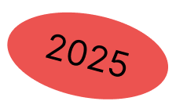

Imagen escrita
Imagen escrita es una asignatura que se centra en la intersección entre diseño, la programación y arte generativo. Utilizando p5.js como herramienta principal, el curso explora los fundamentos de la programación creativa y su aplicación en el diseño visual interactivo.
Proyectos
Sobre mí
Hola y bienvenidos a mi página. Me llamo Oda y soy estudiante de la Escuela de Arquitectura y Diseño de Oslo (AHO), donde me especializo en diseño de experiencia de usuario (UX). Abordo el diseño con curiosidad, compromiso social y un toque de carácter juguetón. Me apasiona explorar cómo las diferentes disciplinas del diseño se complementan para crear experiencias significativas y agradables.